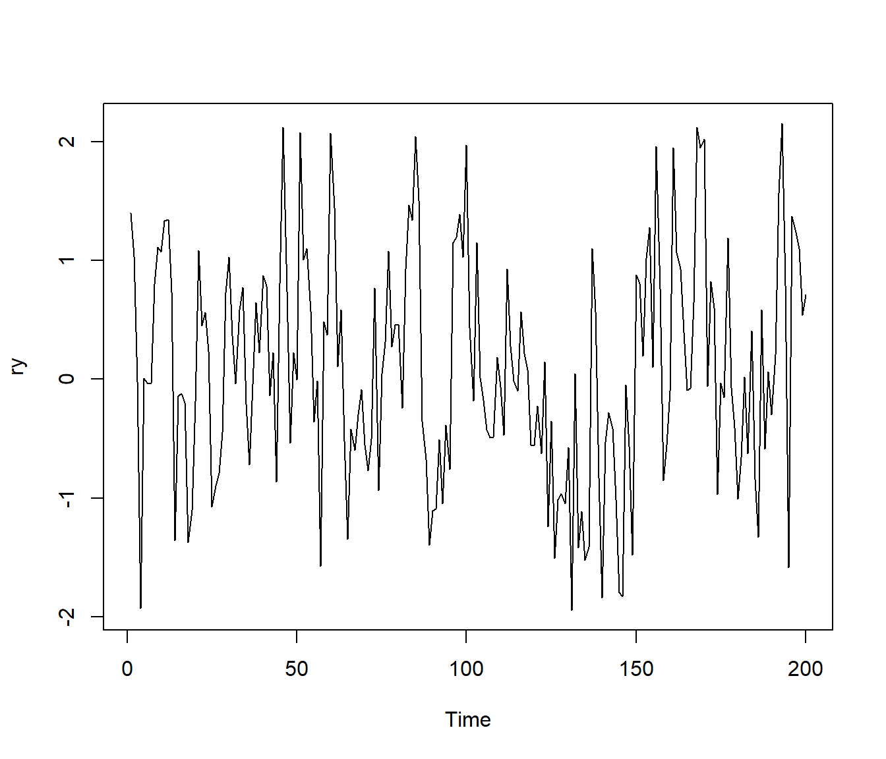
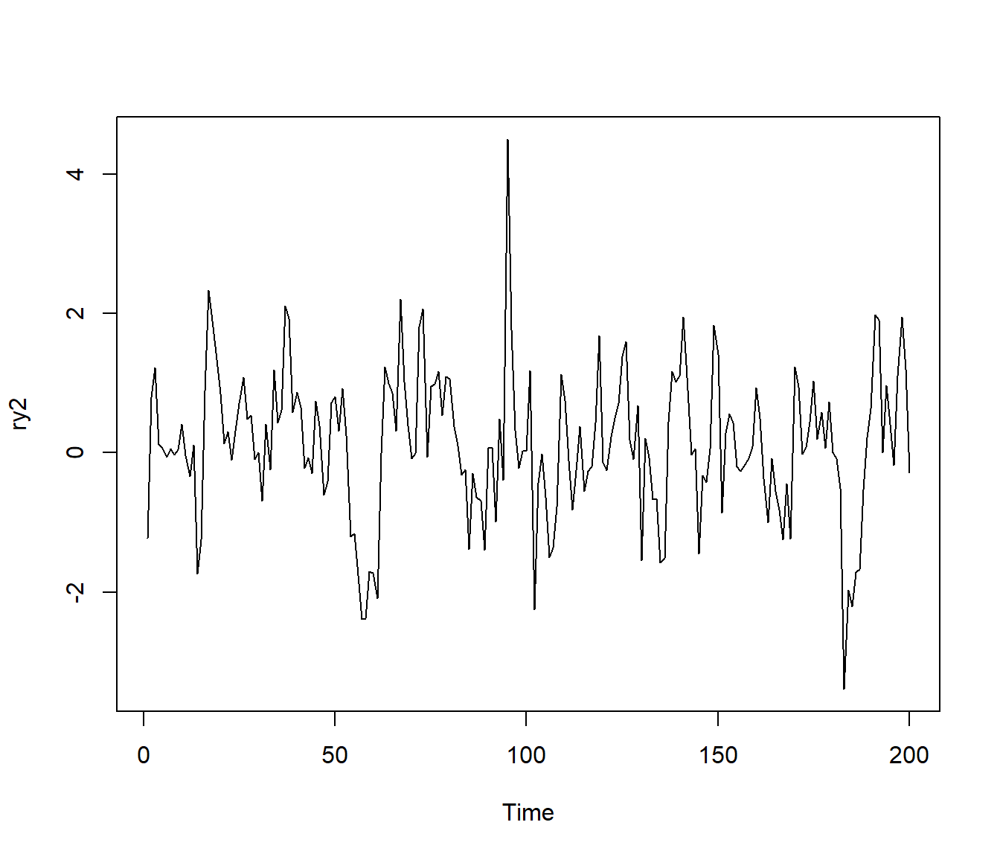
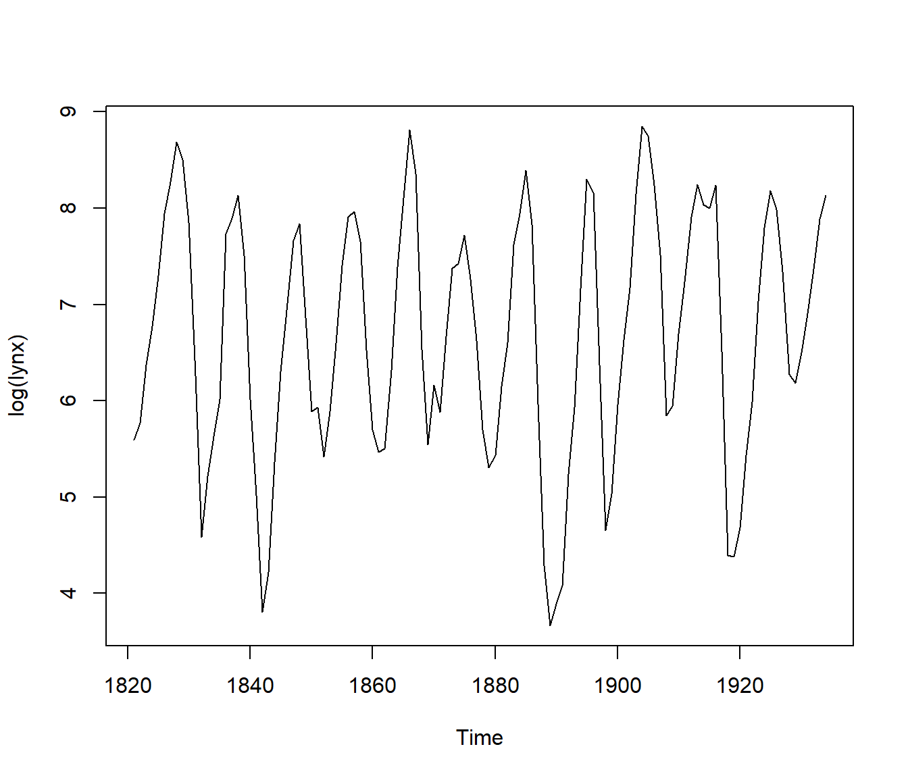
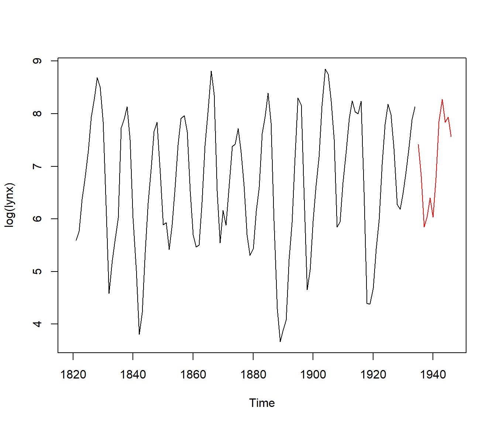
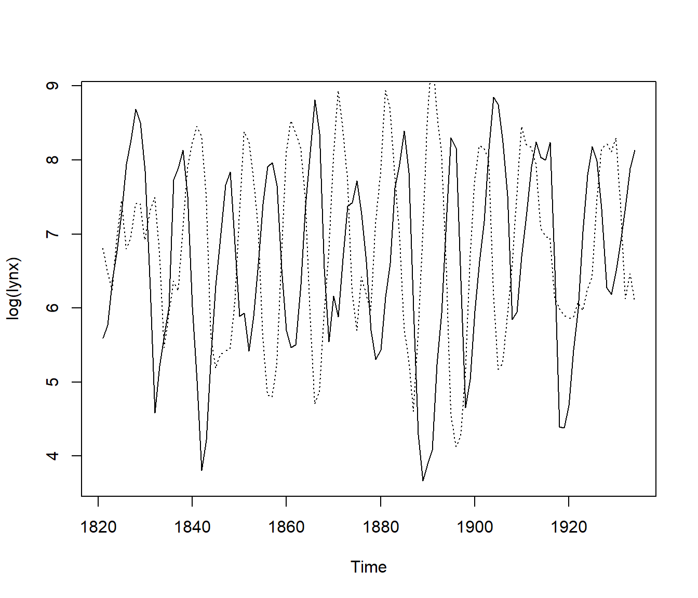
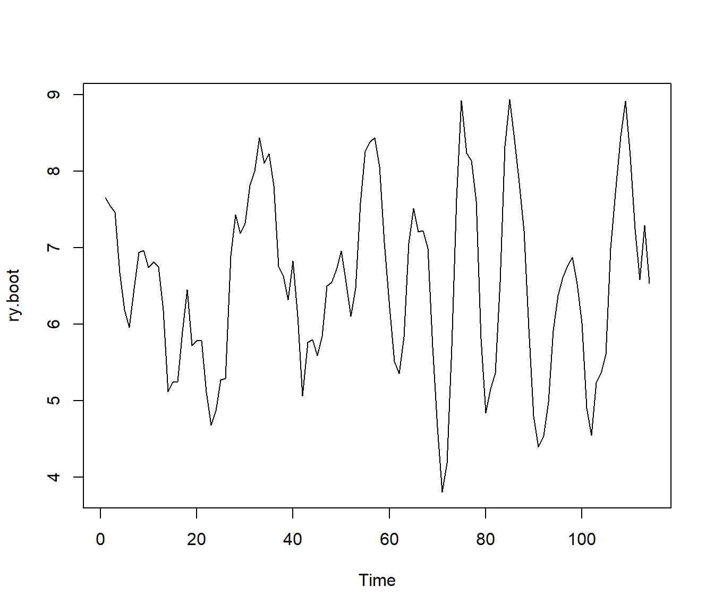
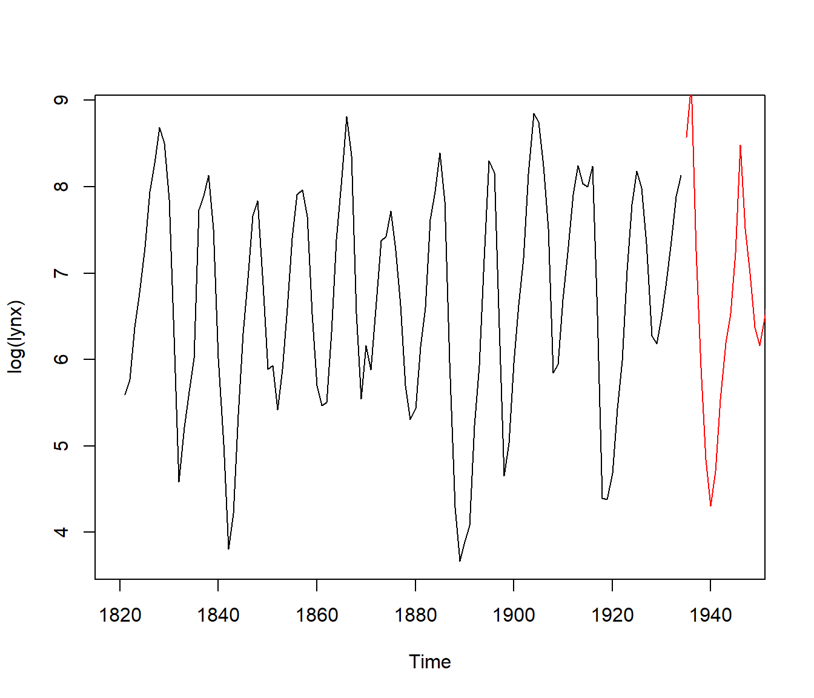

9.4 Implementación en R
9.4.1 Bootstrap paramétrico
Para simular una serie de tiempo en R se puede emplear la función
arima.sim() del paquete base stats.
Los principales parámetros de esta función son:
model: lista que define el modelo, con componentesary/omaque contienen los coeficientes AR y MA respectivamente, y opcionalmente un componenteordercon el orden de los componentes ARIMA.n: longitud de la serie generada.rand.gen: función para generar las innovaciones (los errores). Por defectornorm().n.start: periodo de calentamiento. Con el valor por defecto (NA) se fija automáticamente a un valor adecuado....: argumentos adicionales pararand.gen(). Con la opción por defecto (rnorm()) se suele establecer la desviación típica de los errores consd.
La recomendación es fijar la varianza de las series simuladas si se quieren comparar resultados considerando distintos parámetros de dependencia.
Otras opciones son:
innov = rand.gen(n, ...): vector con las innovaciones (errores).start.innov = rand.gen(n.start, ...): vector de innovaciones empleado en el periodo de calentamiento.
Por ejemplo, podemos generar una serie autoregresiva AR(1) con:
# Parámetros
nsim <- 200 # Numero de simulaciones
xvar <- 1 # Varianza
xmed <- 0 # Media
rho <- 0.5 # Coeficiente AR
nburn <- 10 # Periodo de calentamiento (burn-in)
evar <- xvar*(1 - rho^2) # Varianza del error
# Simulación
set.seed(1)
ry <- xmed + arima.sim(model = list(order = c(1,0,0), ar = rho),
n = nsim, sd = sqrt(evar)) # n.start = nburn
plot(ry)
Como ejemplo adicional utilizamos una distribución t con 5 grados de libertad para generar los errores:
rand.gen.t <- function(n, df = 5, sd = 1) {
sqrt(1 - 2/df) * sd * rt(n, df = df)
}
ry2 <- xmed + arima.sim(model = list(order = c(1,0,0), ar = rho),
n = nsim, rand.gen = rand.gen.t,
sd = sqrt(evar)) # n.start = nburn
plot(ry2)
En el bootstrap paramétrico se emplearía el modelo ajustado. Como ejemplo consideraremos los datos de linces capturados al año en Canadá entre 1821 y 1934:

Figura 9.1: Logaritmo del número de capturas anuales de linces en Canadá entre 1821 y 1934.
En R podemos emplear las funciones ar() o arima() para ajustar un modelo,
pero puede resultar más cómodo emplear las herramientas del paquete
forecast (o de la nueva alternativa fable)
fit.arima <- forecast::auto.arima(log(lynx), stepwise=FALSE, approximation=FALSE)
str(fit.arima$coef)## Named num [1:6] 1.555 -0.953 -0.453 -0.149 0.563 ...
## - attr(*, "names")= chr [1:6] "ar1" "ar2" "ma1" "ma2" ...Este paquete implementa métodos simulate() para los distintos modelos que permite ajustar.
Por defecto hace simulación condicional (future = TRUE), simulando nuevos valores condicionados a los ya observados:
# methods(simulate)
# ?simulate.Arima
# View(forecast:::simulate.Arima)
set.seed(1)
ry <- simulate(fit.arima, nsim = 12)
plot(log(lynx), xlim = c(1820, 1946))
lines(ry, col = "red")
Para hacer simulación incondicional hay que establecer future = FALSE:

9.4.2 Bootstrap residual (semiparamétrico)
En lugar de generar errores siguiendo una distribución paramétrica, se pueden remuestrear los residuos:
fit.ar <- ar(log(lynx)) # Cuidado con el modelo!
n <- fit.ar$n.obs
xmed <- fit.ar$x.mean # mean(log(lynx))
model <- list(order = c(fit.ar$order, 0, 0), ar = fit.ar$ar)
res <- fit.ar$resid[!is.na(fit.ar$resid)]
res <- res - mean(res)
rand.gen.res <- function(n, res) {
sample(res, n, replace = TRUE)
}
set.seed(1)
ry.boot <- xmed + arima.sim(model = model, n = n, rand.gen = rand.gen.res,
res = res) # n.start = nburn
plot(ry.boot)
Con los métodos simulate() del paquete forecast bastaría con establecer bootstrap = TRUE:
set.seed(1)
# ry.boot <- simulate(fit.ar, future = FALSE, bootstrap = TRUE)
ry.boot.cond <- simulate(fit.ar, bootstrap = TRUE)
plot(log(lynx), xlim = c(1820, 1946))
# lines(ry.boot, lty = 3)
lines(ry.boot.cond, col = "red")
Ver enlaces en apéndice A.1.
9.4.3 Implementación en R con el paquete boot
La función tsboot() del paquete boot implementa distintos métodos
de remuestreo para series de tiempo.
Utilizaremos los ejemplos en Canty, A. J. (2002). Resampling methods in R: the boot package. Rnews: The Newsletter of the R Project, 2 (3), pp. 2-7.
9.4.3.1 Rnews 1: boostrap por bloques
“
tsboot()can do either of these methods by specifyingsim="fixed"orsim="geom"respectively. A simple call to tsboot includes the time series, a function for thestatistic(the first argument of this function being the time series itself), the number of bootstrap replicates, the simulation type and the (mean) block length’’.
# Datos
data(lynx)
# ?lynx
# Boot
library(boot)
lynx.fun <- function(tsb) {
fit <- ar(tsb, order.max = 25)
c(fit$order, mean(tsb))
}
# tsboot
set.seed(1)
tsboot(log(lynx), lynx.fun, R = 199, sim = "geom", l = 20)##
## STATIONARY BOOTSTRAP FOR TIME SERIES
##
## Average Block Length of 20
##
## Call:
## tsboot(tseries = log(lynx), statistic = lynx.fun, R = 199, l = 20,
## sim = "geom")
##
##
## Bootstrap Statistics :
## original bias std. error
## t1* 11.000000 -6.46733668 2.4675036
## t2* 6.685933 -0.01494926 0.11635159.4.3.2 Rnews 2: bootstrap residual con “post-blackening”
“An alternative to the block bootstrap is to use model based resampling. In this case a model is fitted to the time series so that the errors are i.i.d. The observed residuals are sampled as an i.i.d. series and then a bootstrap time series is reconstructed. In constructing the bootstrap time series from the residuals, it is recommended to generate a long time series and then discard the initial burn-in stage. Since the length of burn-in required is problem specific,
tsbootdoes not actually do the resampling. Instead the user should give a function which will return the bootstrap time series. This function should take three arguments, the time series as supplied totsboot, a valuen.simwhich is the length of the time series required and the third argument containing any other information needed by the random generation function such as coefficient estimates. When the random generation function is called it will be passed the argumentsdata,n.simandran.argspassed totsbootor their defaults.One problem with the model-based bootstrap is that it is critically dependent on the correct model being fitted to the data. Davison and Hinkley (1997) suggest post-blackening as a compromise between the block bootstrap and the model-based bootstrap. In this method a simple model is fitted and the residuals are found. These residuals are passed as the dataset to
tsbootand are resampled using the block (or stationary) bootstrap. To create the bootstrap time series the resampled residuals should be put back through the fitted model filter. The functionran.gencan be used to do this’’.
# Datos
lynx1 <- log(lynx)
# Modelo
lynx.ar <- ar(lynx1)
# Residuos
lynx.res <- with(lynx.ar, resid[!is.na(resid)])
lynx.res <- lynx.res - mean(lynx.res)
# Boot
library(boot)
lynx.ord <- c(lynx.ar$order, 0, 0)
lynx.mod <- list(order = lynx.ord, ar = lynx.ar$ar)
lynx.args <- list(mean = mean(lynx1), model = lynx.mod)
lynx.black <- function(res, n.sim, ran.args) {
m <- ran.args$mean
ts.mod <- ran.args$model
m + filter(res, ts.mod$ar, method = "recursive")
}
# tsboot
set.seed(1)
tsboot(lynx.res, lynx.fun, R = 199, l = 20,
sim = "fixed", n.sim = 114,
ran.gen = lynx.black, ran.args = lynx.args)##
## POST-BLACKENED BLOCK BOOTSTRAP FOR TIME SERIES
##
## Fixed Block Length of 20
##
## Call:
## tsboot(tseries = lynx.res, statistic = lynx.fun, R = 199, l = 20,
## sim = "fixed", n.sim = 114, ran.gen = lynx.black, ran.args = lynx.args)
##
##
## Bootstrap Statistics :
## original bias std. error
## t1* 0.0000e+00 9.819095 3.46664295
## t2* 6.1989e-18 6.683323 0.095514459.4.4 Spatial data
Ver enlaces en apéndice A.2.